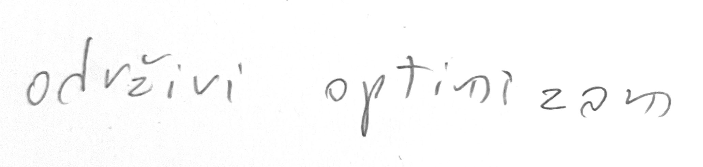
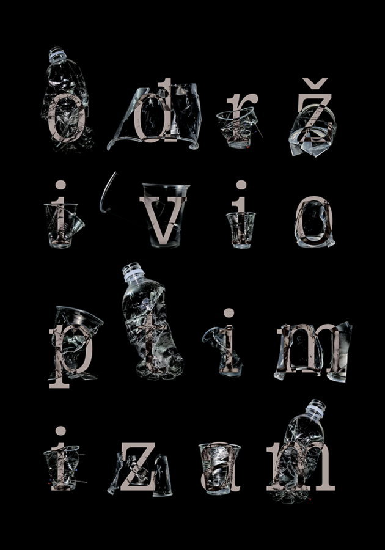
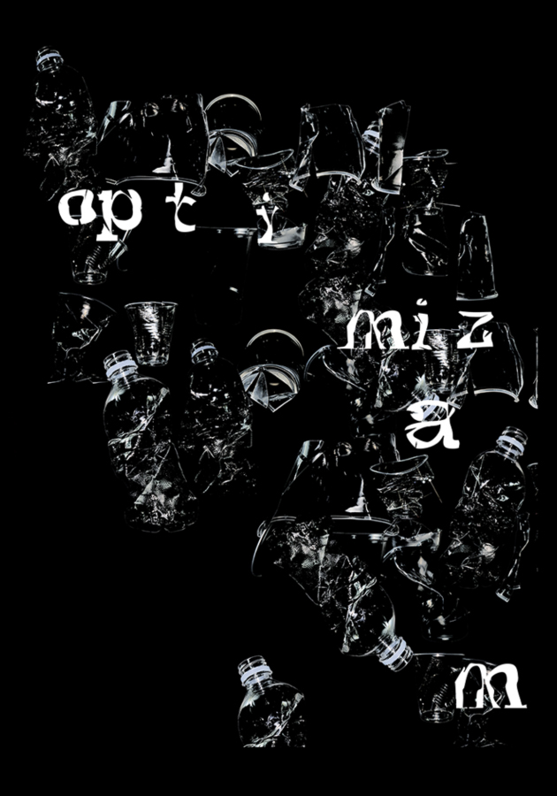
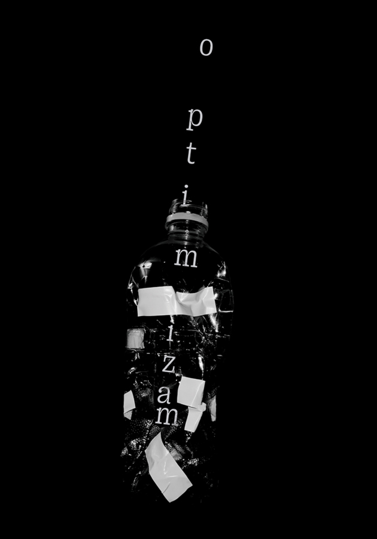

Serija plakata je izrađena za internacionalni natječaj koji provodi Fluid dizajn forum na temu Održivi optimizam. Plakat se bavi narativom čaše koja je na pola puna/prazna, postavlja se pitanje je li mogće da postoji optimizam ako čaša uopće ne može u sebi držati ni kap vode.


